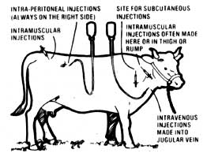
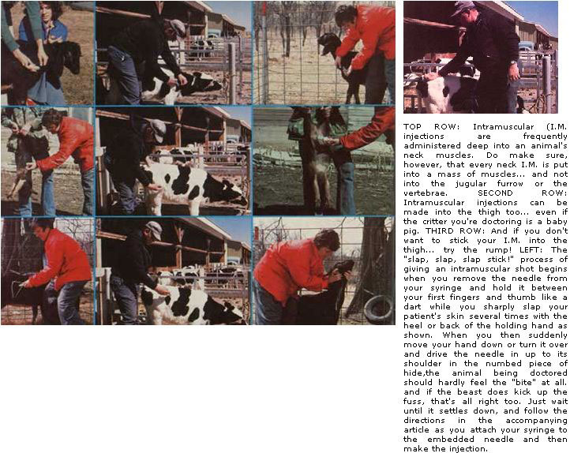
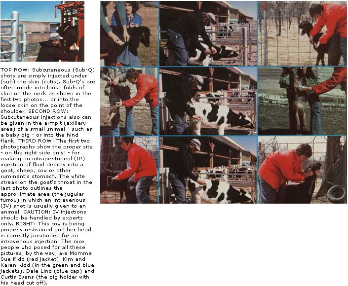
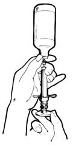

Kansas State University veterinarian Randy Kidd says, "It's not as difficult as you might have thought to give a medical injection to either a pet or a barnyard brute."
If you hate, detest, or just plain fear being on the receiving end of THE NEEDLE as much as I do, you'll probably be surprised to learn that giving medical injections to livestock is a fairly simple process. In fact-when dealing with birds or animals that can be easily restrained-injections are often the simplest and best way to administer most kinds of medication. Furthermore, if the job is done properly, the beasts hardly seem to mind at all . . . at least they don't carry on the way I do when I'm on the receiving end of the procedure.
On the other hand-easy or not-jabbing a foreign substance into any living creature is a serious act. As well as a potentially dangerous one (incorrect medication-administered incompetently-can kill an animal far more quickly than will most diseases).
Before attempting to give any sick bird or animal any kind of injection, then, make sure you know what you're doing and that you have correctly diagnosed the ailment you're trying to treat. And, if you have any doubts on either of these scores (that you know what you're doing or that your diagnosis is correct), consult your vet and be ready to pay for his good advice before you proceed any further.
Then-and only then-obtain the recommended medication and read its label . . . SEVERAL TIMES. It's an interesting thing about labels: They usually contain information on dosages and correct administration-almost everything, in fact, that you need to know about a drug, vaccine, etc.-which, if followed, will keep you from misusing the products they describe.
Once again, then, please remember that the science of medicine is not an area of human activity that often forgives sloppiness in any form. And that goes double for the specific practices of medicine discussed in this article: Even the correct medicine wrongly injected can be fatal. Make sure you know exactly what you're doing before you fill that first syringe or touch that first needle to skin.
Your local Yellow Pages probably lists one or more veterinary supply houses. Most all of the equipment you'll need will be available from one of these sources . . . just know what you're after before you go in to make a purchase and you'll have no reason to feel "out of place" while you're there.
First off, you'll need a syringe . . . the "plunger" that both holds the medication, serum, or vaccine and "pumps" it into your "patient's" hide. Syringes vary in size from tiny tuberculin (or insulin) types to monsters with a capacity of 60 cubic centimeters (cc's) or more.
Most vaccines-since they're given in small quantities, even to quite large animals-can be handled with a 2- to 6cc "hypo". You'll also need a 12- to 20cc syringe for administering antibiotics to goats, sheep, horses, cattle, etc. And that's about as far as you'll have to go with syringes: The really big ones-the 35- to 60-cc brutes-are just too unwieldy for the novice . . . it's best to let your vet handle any shots requiring that much medicine.
Probably your best bets when buying syringes are the commonly available plastic disposable models. Since these are discarded after each use, the risk of infection from improper cleaning is just about nil (careless handling, however, could contaminate a brand-new syringe). The throwaways, also, are inexpensive enough to be a logical choice for the beginner . . . and-because of their sanitary nature-are preferred by most vets, too.
Glass syringes, or steel syringe jackets with replaceable glass barrels, are the "top of the line" alternative to the disposables. Their main advantage is that they'll likely last until you lose them. On the other hand, they do have a major disadvantage too: If you don't clean 'em properly between each and every use, they can infect an animal and make it sicker after treatment than it was before.
The business end of your injecting outfit is the needle, or point. This fits onto (it usually screws on) the syringe and, since it's the path that medications follow to get from the syringe and into a patient's body, the needle is likely the one piece of shot-giving equipment that you already (ouch!) know all about.
Since points are available in a whole range of types (they vary in both length and bore diameter) there is no one allpurpose size. For big critters (cattle, horses, large goats and sheep, etc.) you'll want needles 1-1/2 inches long . . . while 3/4 inchers will do the job for house pets and other smaller beasts. The bores (diameters) of these stickers are described by gauge numbers and, as in shotguns, a larger gauge means a smaller diameter. Use a 16- to 18-gauge point for your large "patients" (their muscle contractions could snap a smaller needle in two!). Littler beasties (dogs, cats, small goats, and the like) require something more in the 20- to 22-gauge range. And, just in case you're wondering, the needles that have left you lying on your stomach with your tender behind exposed were probably no more than 23 or 25 gauge.
I recommend disposable needles to any beginner (and to most everyone else). The risk of infection from a "dirty" needle is nothing to mess with, especially when the cheap throwaway types can all but eliminate this danger.
In fact, even if you do decide to try the reusable stainless steel needles that are available, you'll have to check them for sharpness before every use and replace 'em if they're the least bit dulled. A dull point can be a real pain-both for the animal and the shot-giver-because it's quite difficult to get an unhoned tip through a beast's tough skin.
So, at the risk of belaboring a very important thought: If you choose to buy reusable needles or syringes, you are accepting (automatically!) the very serious responsibility of keeping that equipment clean and safe. This is one case-at least in my professional opinion-where throwaways definitely are better.
You should know from the beginning that no sterilization process is foolproof . . . the best you can do is take every step possible to approach that unreachable perfection.
Heat sterilization, however, comes pretty close to doing a complete job. Simply cook your syringe and/or needle-if, despite my recommendations, you've decided to stock up on the reusable steel and glass models-in a 250-degree(F) pressure cooker-at 15 pounds per square inch (psi) of pressure-for 20 minutes. As a better-than-nothing alternative you can boil your equipment in a regular pot for thirty minutes . . . but this treatment won't kill any bacterial spores.
Chemical disinfectants can be very effective, but they carry a built-in problem of their own. A residue of the cleaning chemical could inactivate the vaccine, medicine, etc., that you plan to use. Because of this possibility there are no perfect chemical disinfectants ... though some are effective when handled properly. That "properly" translates as using the correct dilution of the chemical, keeping the items to be cleaned in contact with the solution for a long enough period, and removing the residual disinfectant in an adequate manner.
The quaternary ammonium compounds-such as Roccal, Cetavlon, Desogen, and Bradol-are all good. You can find these (usually) in any restaurant supply house. The "ammonias" will eliminate a whole slew of bacteria and some viruses when used for at least one minute at a concentration of 200 parts per million (ppm). (Five tablespoons of Roccal-for example-in one gallon of water will give you that 200-ppm dilution.) These products, by the way, don't lose their strength rapidly . . . which is fortunate because they tend to be expensive.
Quanadine derivatives (such as Nolvasan) have about the same advantages and disadvantages as do the quaternary ammonias, and should be used at a one percent concentration for at least one minute.
Iodine or iodophores can also do the job. At 25 ppm, iodine will handle some bacteria . . . but 400 to 600 ppm, and a contact time of several hours, will be required to knock off especially resistant bacterial strains. (Remember that a onepercent solution is equivalent to 10,000 ppm.)
Probably the easiest disinfectant to use (and the most practical) is plain old household bleach. It kills most bacteria-even the sporicidal types-and is effective against almost all viruses. Use it at 200 ppm with one minute of contact time. (If you mix 1/2 ounce of Clorox-which is a 5.25-percent sodium hypochloride-into a gallon of water, you will produce approximately a 200-ppm solution.)
Bleaches, however, have one major disadvantage: They dissipate rapidly. So, if you use them, mix up a new batch each time you disinfect. (This rapid dissipation, by the way, is actually a plus . . . since simple air drying or a quick rinse in sterile [boiled] water will assure you that the bleach will not affect your medicine. Remember, though: Never leave any metal items floating in a bleach solution . . . since it'll corrode them.)
No matter how perfect your technique, you can't give a shot until you get the medicine out of its bottle and into the syringe. Like most things, this process is easy as fallin' in a crick . . . once you know how.
First and foremost, IS YOUR SYRINGE CLEAN? "Clean" means not only disinfected but also free from the disinfectant residue itself.
The traditional method of filling a syringe requires that you [1] shake the bottle of medicine, [2] hold it upside down, [3] force the needle through the stopper, and [4] fill the syringe by pulling back on the plunger. It is then best to [5] replace the filling needle with another sterilized point before making the injection.
For a quicker fill-up, proceed as above but pull the plunger back before inserting the needle into the bottle.
Then hold the bottle upside down and force a bit of air into the container, pull back again on the plunger to draw out some liquid, and repeat this pumping process until the syringe is filled.
And finally: Always be sure to expel any air in the syringe or needle by holding it point up and squirting out a tiny bit of medicine before making your injection.
The first (and most important) aspect of administering an injection is animal restraint. [For a thorough treatment of this subject, see Dr. Kidd's article, "Restrain That Beast", pages 84-87, MOTHER NO. 52-THE EDITORS.] Trying to treat an unrestrained beast is like trying to change a tire on a moving auto . . . you're as likely to get run over as you are to accomplish the job you set out to do.
Smaller critters can be held by an assistant while you stick 'em. Remember, though, that an animal's (or a man's, as I can attest) normal response to a sharp object in the rump is to buck, jump, kick, and just generally get the hell away from the pain. It helps to be ready for the inevitable.
Sometimes one person can both hold and inject a small goat, calf, or some such by forcing the little feller or gal against a sturdy fence with a knee while giving him or her a shot in the neck or thigh. A full-sized cow or bull, on the other hand, will require careful restraint techniques. Cattle should be held in a chute or tied to a strong fencepost . . . and forced against the fence itself by a helper. Use a substantial halter or nose lead on each of the larger brutes . . . and tie the animal to a sturdy fencepost rather than the fencing boards or wire. I've seen bulls snap the rope right off a nose lead, and I've watched (usually angrily) while cattle walked through 2 X 4 planks or barbed wire like it wasn't even there.
When there's no alternative you can sometimes take your "patient's" mind off his or her problems with a large mouthful of some particularly favored food. This is possible because many animals can't think over the noise of a growling stomach . . . a handicap that is not unknown in human beings.
OK. Once you've provided yourself with a stationary target, it's time to clean the injection site. To completely disinfect a portion of an animal's anatomy you'd have to shave it and then soak the area in a 70percent alcohol solution for several hours. Unless you're crazier than most folks, however, you'll settle for something short of perfection. Adequate cleansing can be accomplished by mechanically removing any dirt or crud with soap and water first, and then washing the site again with the alcohol solution.
Now then. It's a good idea-at this point-to take a minute to "think the way the critter thinks". It's almost certainly going to try to escape the hurt . . . and, since you've restrained the animal and made flight impossible, it just might make an attempt to kick the pain away.
Sound medical practice dictates that one should avoid getting his own leg broken while injecting medication into a beast's caboose region. Station yourself north of any possible southbound hooves by placin' your body firmly against the animal's side or flank area.
Likewise, when a shot is given in the neck region, the front hooves become the logical means of protest. In such a case, press yourself close to the beastie's shoulder before injecting away.
If you've paid attention so far, you're finally ready for the needle process itself. Human docs practice their technique on oranges, but an animal's hide is tougher than the gnarliest citrus fruit that ever came out of Florida. Old footballs, basketballs, or medicine balls would be more appropriate practice items.
There are several basic ways to give a shot . . . and, as with most things that employ medical terminology, each of these has an abbreviation to further confuse the neophyte.
Intramuscular (I.M.) injections are given deep into the muscle tissue itself. Other than the intravenous injectionwhich I'll explain later-the I.M. injection is the quickest and most efficient way to get medication into the system.
However, some of the medicines created for I.M. administration can-if not buried deeply enough in the tissue-cause the formation of large lumps of abscesses at the site of the injection. Because of this danger the potential shot-giver must know where the large muscle masses are on any animal being treated . . . and he must have a needle of sufficient length (1-1/2 inches for the bigger brutes) to reach deeply enough into that tissue. The sites most commonly chosen for this type of shot are the neck, the thigh, and the rump.
The neck area is best treated with caution when I.M. injections are being considered. Small animals (sheep, goats, and on down . . .) might not have enough muscles in that part of their bodies to safely contain large doses (10 cc's or more) of medication. Also, you should completely understand the beast's neck anatomy before you start poking things into it. The jugular vein runs along the bottom third of the neck-near the surface-in the jugular furrow, and the vertebrae run approximately down the mid-portion. NO I.M. INJECTION MUST EVER BE MADE INTO EITHER OF THESE AREAS.
The thigh is the logical muscle mass to use for any intramuscular shot . . . if you're sure the animal you're treating won't kick the slats out of the barn when you poke him or her. Sheep and goats are thus good prospects for a thigh I.M., cows and horses are decidedly not.
The large concentration of muscle in the rump-between the pin bones and the hip and equidistant from the vertebrae and the thurls-makes a good injection site . . . particularly for large feisty critters.
No matter where you give it, though, the I.M. injection goes easiest when you follow a special technique. Remove the needle from the syringe and hold the needle between your first finger and thumb . . . just like a dart. You can then desensitize the critter's hide by giving it a few sharp slaps with the back or heel of your needle-holding hand. This sequence of swats should be rapid and hard enough so the numbing effect of the blows isn't lost. The entire process resembles an old Laurel and Hardy movie: slap, slap, slap, stick! That "stick" is when you turn your hand around or drop it down and drive the needle through the desensitized skin and into the mass of muscle clear up to its shoulder. Animal injections are not for the timid.
If your beast is going to kick up a fuss, it'll usually do so when it's stuck. Then, after the "patient" calms down you can attach the syringe to the alreadyinserted needle. Remember, though, that the syringe should be FULL of liquid (to overflowing) and that care must be taken to ensure that NO air is forced into the animal with the fluid. Also, BEFORE making the I.M. injection you should always draw back on the plunger slightly to be sure you haven't hit a vein (if blood appears in the chamber of your syringe, withdraw the needle from the animal and start over again). Then-after the vaccine, antibiotic, or whatever has been injected-it's always good practice to withdraw the needle quickly and rub or pinch the site to help prevent any leakage of the medication.
Intravenous (I.V.) injections are given into a vein instead of into a muscle. This method should not be attempted by a novice without expert instruction . . . there are just too many dangerous ways for an intravenous injection to go wrong.
For instance: To give a proper I.V. you must know exactly where the vein is that you want to hit. Your needle then must be threaded into the vein and must remain there throughout the whole injection process. (A breath of fresh air might be prescribed at this point for squeamish readers.) Many of the medicines and whatnot intended for I.V. administration are damaging to bodily tissues, and can cause tissue neurosis or tissue sloughing if inadvertently injected outside the blood vessel. Remember also !hat an artery runs alongside each vein . . . and some I.V. medications can be lethal when introduced into an artery. If, however, you find-for some reason-that you absolutely must administer an intravenous injection, the following tips should prove helpful:
On larger animals the jugular vein is the most common intravenous injection site. To find this vein press your thumb into the jugular furrow near the juncture of the animal's neck and shoulder (below the location of the intended shot). If you do this properly, you'll be able to watch the vein distend itself along the length of the furrow.
Then, while the blood vessel is held distended, direct an 18-gauge, 1-1/2-inch needle (up to a 14-gauge can be used for horses and cows, but, since too much medicine injected overly quickly can cause shock, the smaller needle helps prevent this) at a right angle to the neck and thrust it firmly into the vein. If you do this correctly, a steady drip of blood from the needle's base will soon assure you that its point isindeedinside the vein. That's the signal to maintain your thumb pressure while you push the business end of your "hypo" parallel to the vein and in the direction of the beast's chest. Seat the needle up to its shoulder in the lumen (the hollow center) of the jugular. Blood should continue to drip from the needle during this process.
Attach the FILLED TO OVERFLOWING syringe to the needle, draw its plunger back slightly to make absolutely sure that no air is trapped in either the needle or syringe and that they contain only blood and the medication which will be injected. Make the injection, remove the needle, and pinch the injection site to prevent leakage. (It's a good idea, too, after giving the I.V., to release the pressure on the vein and then apply it again-until blood appears in the syringe-to prevent any fluid from oozing out into the surrounding tissues when the needle is withdrawn.)
Subcutaneous (Sub-Q) shots are simply injected under (sub) the skin (cutis). These can be administered anywhere that there's a loose fold of skin. Common sites include the hind flank, in the front "armpit", and-in pigs-behind the ears.
To give a Sub-Q you pinch the skin-lift it away from the body-and stick the needle into the pocket thus created between the two epidermal layers. Always be sure that your thrust (you did have your eyes open, didn't you?) hasn't gone right on through and out the other side (medicine injected onto the ground isn't very therapeutic to an animal). By moving the needle tip around slightly after inserting it you can usually tell if it's in the pocket.
Medicines that can be administered Sub-Q are neither absorbed as rapidly nor as completely as I.M. injections. ONLY MEDICATION LABELED FOR SUBCUTANEOUS USE SHOULD BE SO INJECTED . . . others could cause nasty ulcerations.
Occasionally, it may be necessary to give large amounts of fluid to a sick creature. Often these quantities are best given intraperitoneally (I.P.). That is, the fluid is injected into the stomach cavity where it is then absorbed by the peritoneum lining.
The trick in I.P. shots is to get the liquid into the cavity and not into the intestines. Luckily, goats, sheep, and cattle have a ready-made area for needle insertion ... the right paralumbar fossa. This is a triangular area lying between the hipbone (the forward bone of the pelvis) and the last rib . . . with the vertebrae forming an upper boundary. Only the right side of the animal is used because a large part of any ruminant's stomach (the rumen) lies on the left side and could be injured by an injection there.
A 1-1/2- to 2-inch, 16- or 18-gauge needle is used for I.P. shots, and is thrust directly into the fossa at an angle perpendicular to the critter's body.
BE CAUTIOUS: Some I.P. medications can-in extreme cases-be toxic enough to cause peritonitis. All fluids given in this manner should be warmed to body temperature (but no medication or needle should ever be used that is warmer than the temperature of the beast to be treated), and only medicines (or vaccines, etc.) designed for I.P. use should be so administered. If you have any doubts (about anything connected with animal injections), check with your vet.
Well, that's the process . . . from the equipment-buying beginning to the needle in the behind. With reasonable caution and the methods outlined here, most routine vaccines and medications can be readily and inexpensively administered to almost any kind of livestock by anyone who has a few critters do his or her place. Who knows, the practice might even make getting an injection yourself a little less traumatic. Still, for my money-at least when it comes to shots-it's definitely better to give than to receive.
Further information on medicating your own farm animals by injection can be found in the following sources:
1. "How to Give That First Injection", MOTHER NO. 43, page 90a
2. A Veterinary Guide For Animal Owners by C.E. Spaulding, D.V.M. (Rodale Press, 1976). Hard cover. $9.95
3. Veterinary Guide for Farmers by F.W. Stamm (Hearst, 1975). Hard cover. $9.95
4. Animal Husbandry for Self-Sufficient Living by Guy Lockwood, D.V.M. (White Mountain, 1977). Hard cover. $7.95
(The volumes above are available in good bookstores or can be ordered for the listed price plus 95 cents shipping and handling from Mother's Bookshelf, P.O. Box 70, Hendersonville, North Carolina 28739. MOTHER NO. 43 is available for $2.50 plus 95 cents shipping and handling from THE Mother Earth News(restricted), P.O. Box 70, Hendersonville, North Carolina 28739.)
|
 This cow is being properly restrained and her head is correctly positioned for an intravenous injection |
 |
 |
|
 |
|
|